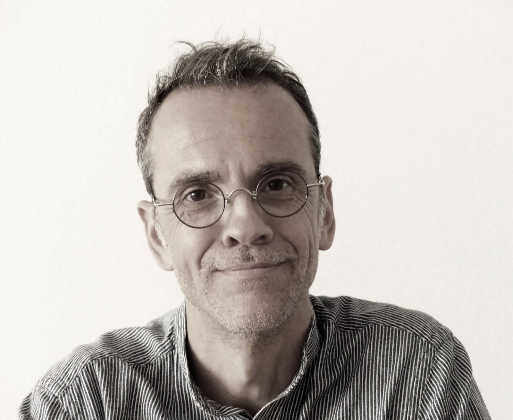
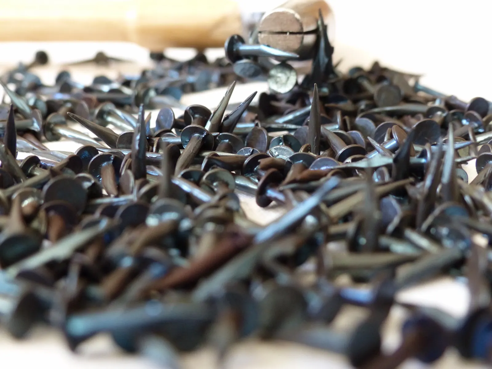
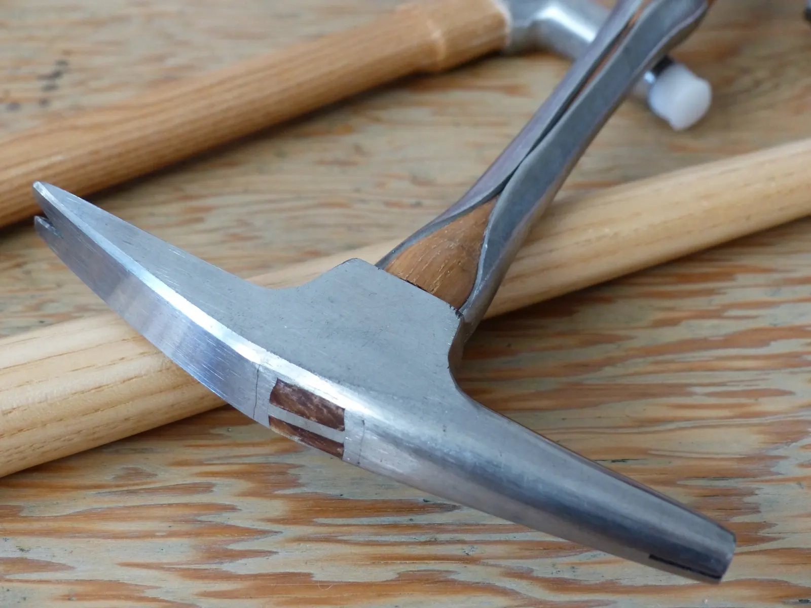
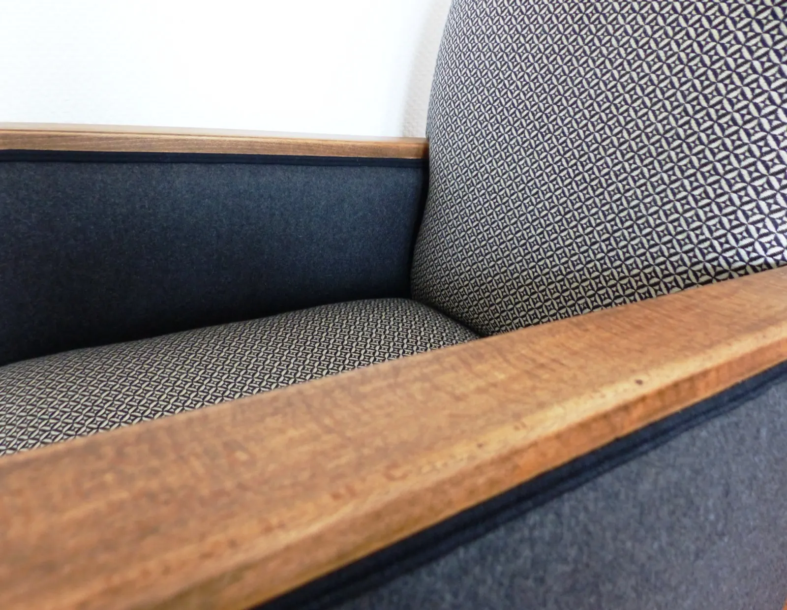
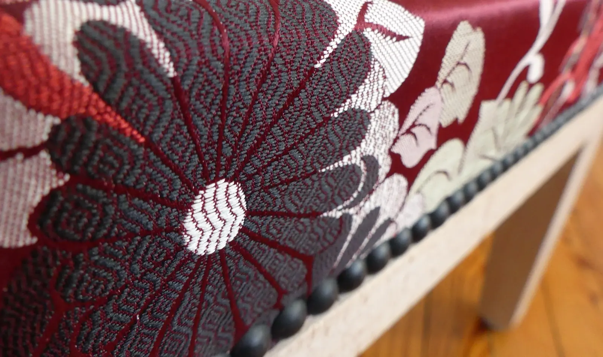

Atelier de tapisserie à Ramonville-Saint-Agne, près de Toulouse
Des fauteuils singuliers qui s'adaptent à vos intérieurs.
Garnitures traditionnelles en sangles, toiles de jute, ressorts et crin végétal piqué pour former l'assise. Fûts restaurés avec un ébéniste, bois relooké par aérogommage ou sablage.
20 000 toursau test Martindale, au minimum, pour chacun de nos tissus
Europetous nos tissus y sont fabriqués, dont des collections recyclées
Crin végétalpiqué pour tasser et donner sa forme à l'assise
Un ébénisteen étroite collaboration pour restaurer les fûts

Nicolas Barbier, artisan tapissier

Semences sur l'établi
Le métier de tapissier réserve de belles surprises.
Une chaînette égarée entre les interstices d'une méridienne, une date et une signature griffonnées par un menuisier sur une chaise Art déco, une estampille sur un fauteuil d'époque, un mot laissé par un précédent artisan.
Ce métier, nous l'avons choisi pour écrire une nouvelle histoire pour chacune des pièces qui nous est confiée. Un métier où l'esprit créatif et le travail minutieux sont des valeurs essentielles.
« Bien faire, c'est respecter l'objet à restaurer. Bien faire, c'est s'inscrire dans la durabilité. »
Notre savoir-faire traditionnel, notre goût pour associer les matières et les couleurs, et vos envies : canapés, fauteuils, chaises, tabourets, quel que soit le style.


Garnitures traditionnelles
L'étape primordiale consiste à piquer le crin pour le tasser et donner la forme définitive à l'assise selon le style du siège. Garniture en plein, à pelote, en cuvette : à chaque style sa garniture.
Sangles
Toiles de jute
Ressorts
Crin végétal
Méthode contemporaine
En associant différentes épaisseurs de mousse, on joue sur le confort, ferme, intermédiaire ou souple. La mousse peut aussi se combiner avec des ressorts pour un effet rebond.
Mousse haute résilience
Bultex
Dryfell pour l'extérieur
Polyester
Restauration du bois et ébénisterie
Les fûts des sièges sont systématiquement contrôlés et, si besoin, restaurés, recollés et traités, en étroite collaboration avec un ébéniste. Pour relooker le bois : aérogommage pour les bois vernis ou cirés, sablage pour les bois peints. Cire, teinte, huile ou peinture, selon le tissu, l'état et l'essence. Nous aimons particulièrement faire réapparaître les veines du bois.
Confection sur mesure
Rideaux, coussins, têtes de lit et banquettes, dans un large choix de tissus d'ameublement, de cuir et de simili-cuir.
Louis XV, Empire, Art déco ou plus contemporain : nous sommes à votre écoute. Toutes les prestations
Des tissus testés et fabriqués en Europe.
Le test Martindale mesure la résistance d'un tissu à l'usure, en tours : une toupie tourne sur l'étoffe. Pour un canapé à usage domestique, la norme est de 10 000 à 15 000 tours.
20 000tours au minimum : nous n'utilisons que des tissus qui y ont résisté.
Élitis
Nobilis
Canovas
Lelièvre Paris
Thevenon

Tissu à chrysanthèmes, clous décoratifs
Passés par l'atelier.
Chaises des années 70, fauteuils d'époque, tabourets, bergères : quelques pièces regarnies, parmi une soixantaine dans notre galerie.